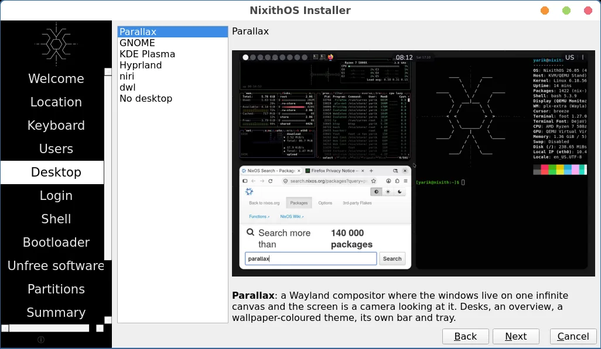
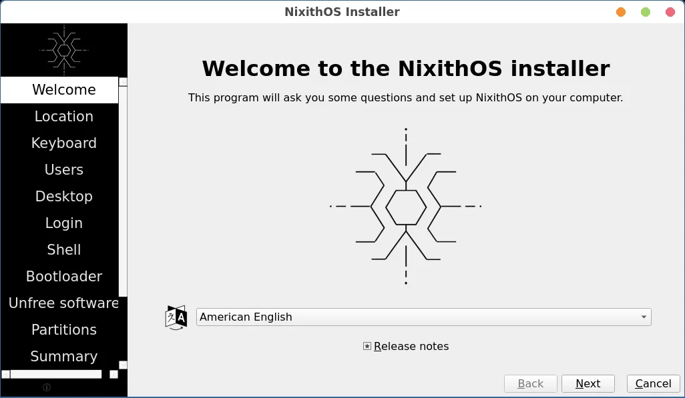
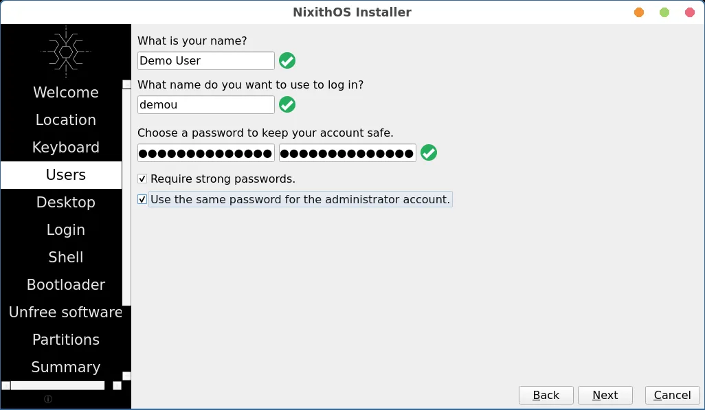
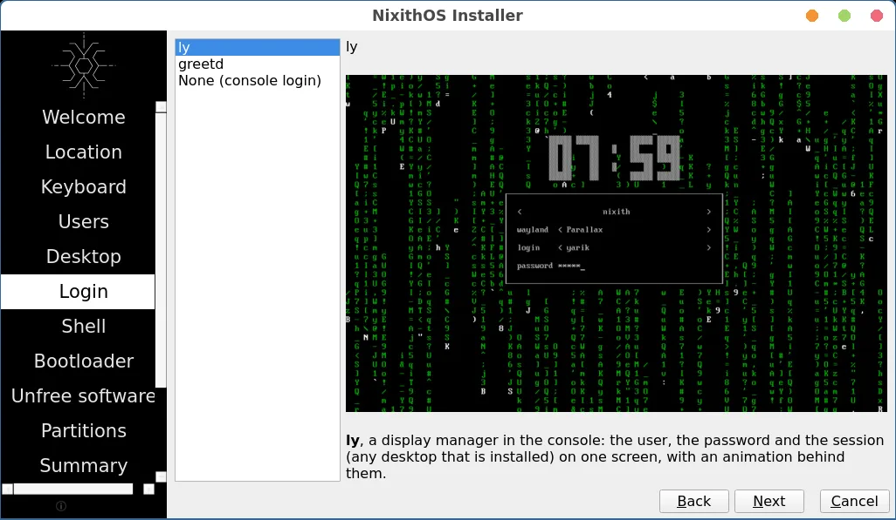
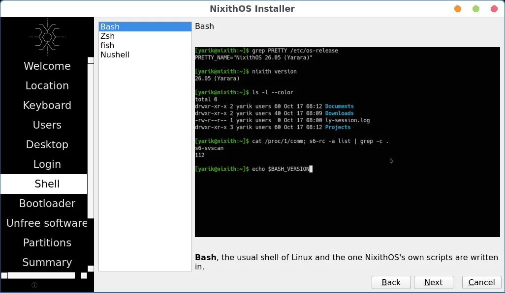
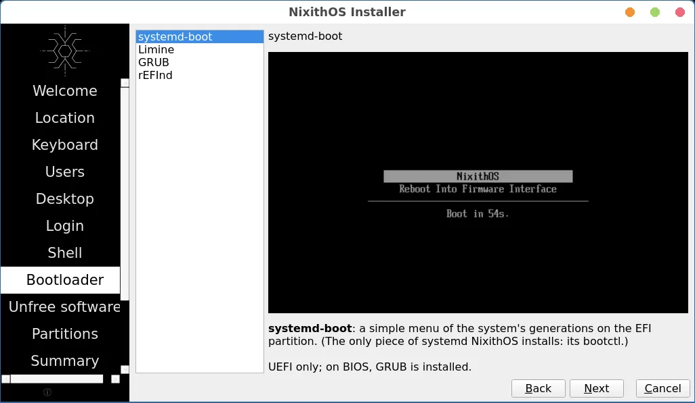
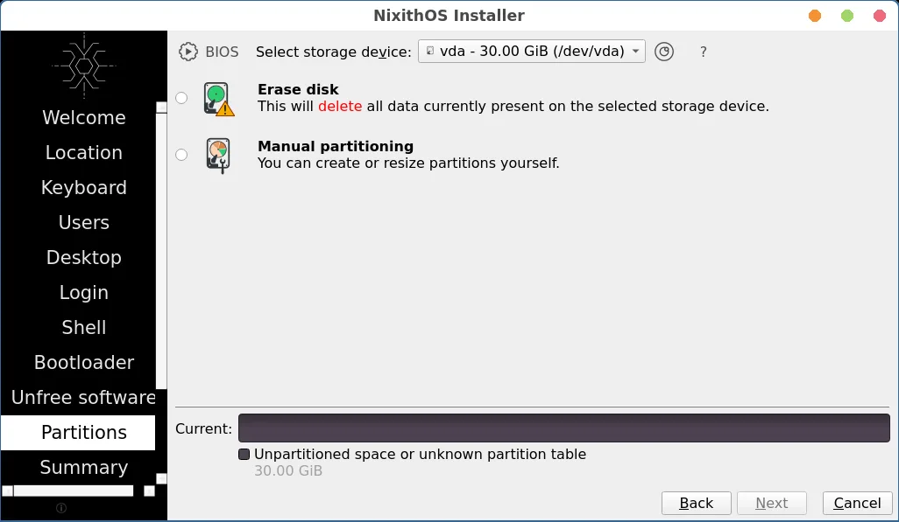

nixpkgs 26.05 · s6 + s6-rc · x86_64
NixOS без systemd
Те же пакеты nixpkgs и та же декларативная конфигурация. Систему запускает и держит s6-rc, а всё остальное остаётся как в NixOS.
Что изменилось
Меняется только init и то, что с ним связано. Новых возможностей поверх NixOS нет, пакеты не пересобраны и берутся из кэша nixpkgs.
| NixOS | NixithOS | |
|---|---|---|
| PID 1 | systemd | s6-svscan |
| Службы | systemd-юниты | сервисы s6-rc; юниты модулей nixpkgs переводит unitc |
| Сеансы | systemd-logind | elogind |
| Пересборка | nixos-rebuild switch | nixith switch, можно частично через --only |
| Загрузчик | systemd-boot, GRUB | systemd-boot, GRUB, rEFInd, Limine |
| Пакеты | nixpkgs | nixpkgs, без изменений |
| configuration.nix | модули NixOS | те же модули |
Модули nixpkgs по-прежнему описывают службы как systemd.services.*. NixithOS собирает из этих описаний дерево s6-rc, поэтому services.openssh.enable = true работает без правок.
Команда nixith
Замена nixos-rebuild. Применяет конфигурацию целиком или одну её ветку.
$ sudo nixith switch --only services.openssh $ nixith parts system: /nix/store/…-nixith-system-nixith-26.05 base: /etc/nixith/configuration.nix part 1: services.openssh from /etc/nixith/configuration.nix
- switch
- собрать и сразу применить
- boot
- применить при следующей загрузке
- test
- применить без записи в загрузчик
- build
- только собрать
- --only PATH
- пересобрать одну часть конфига
- parts
- из чего собрана текущая система
- generations
- список поколений
- install
- поставить систему на диск
- generate-config
- описать железо в hardware-configuration.nix
Установщик
Живой образ загружается в LXQt на labwc и сам открывает Calamares. Что будет стоять в системе, выбирается там.














Рабочий стол
- Parallax свой
- GNOME 50
- KDE Plasma
- Hyprland
- niri
- dwl
Вход
- ly
- greetd tuigreet
- консоль
Оболочка
- Bash
- Zsh
- fish
- Nushell
Загрузчик
- systemd-boot UEFI
- Limine UEFI
- GRUB BIOS / UEFI
- rEFInd UEFI
Скачать
Графический ISO весит 2,8 ГБ, это больше, чем GitHub принимает в один файл релиза.
Ссылка на скачивание скоро появится.
Пока образ можно собрать из исходников одной командой. Почти всё скачается из кэша nixpkgs.
$ git clone https://github.com/YoungEscapist/nixithos $ cd nixithos $ nix-build -A isoGraphical result/iso/nixithos-graphical-…-x86_64-linux.iso
Тесты
Каждая часть init проверяется в виртуальной машине, так же как в NixOS.
- boot
- units
- switch
- login
- replace
- elogind
- user-services
- bootloader
- sandbox
- timesync
- module